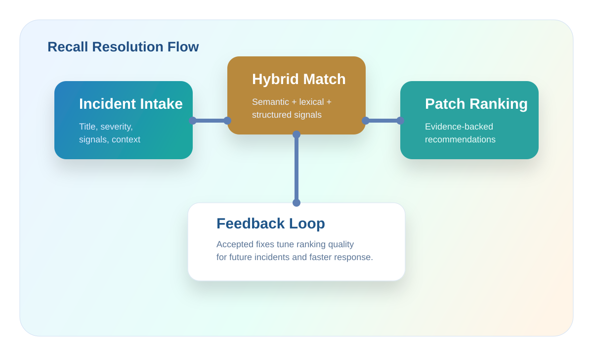
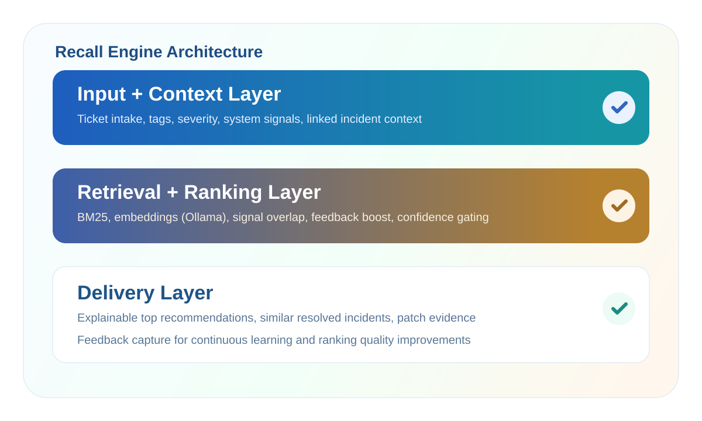

Reduce Repeated Investigation
On-call engineers stop re-solving the same issue and can reuse proven fixes quickly.
AI-powered incident code resolution with local-first intelligence. Integrate your organization to sync real tickets and train Recall on resolved fixes.
Recall learns from resolved incidents and the code changes that fixed them. It retrieves similar cases and recommends ranked, evidence-backed fixes.

On-call engineers stop re-solving the same issue and can reuse proven fixes quickly.
Recommendations include matched incident evidence, not only generic LLM output.
Organization integration is explicit and controlled. Data remains local-first by default.
Feedback and training corpus growth continuously improve ranking quality.
Integrate once, train with resolved tasks, then use Recall during live incidents.
Open Control Center and save an Azure DevOps or Jira profile.
Bring in resolved tasks and train Recall with useful code-level fix context.
Enter issue details and signals (error code, system, severity, tags).
Review ranked suggestions, use evidence, apply safely, and give feedback.
Hybrid retrieval combines lexical match, embeddings, and structured signals so recommendations are specific and explainable.

Projected benchmark indicators for product demo and positioning. These are illustrative targets until full benchmark runs are published.
For onboarding, integration setup, or recommendation quality feedback, use these channels.
Contributors include you and everyone who has written code or provided domain input for Recall.
Describe the issue and retrieve code-backed recommendations from previously resolved work.
Results from the recommendation engine ranked by confidence, severity fit, and learned feedback.
No ticket analyzed yet. Submit a ticket to see patch recommendations.
All submitted tickets stored locally on your device. Click any ticket to re-load it into the form.
No tickets submitted yet. Analyze your first ticket!
Analyze your first ticket to get AI patch suggestions. All recommendations come from your trained tickets — the model learns exclusively from real fixes you add in the Train tab.
localStorage.
Integration tokens are kept in session storage and are not persisted across browser restarts.
You may clear all saved data at any time from the History tab.
Fetch real tickets from your Azure DevOps org and add them to the AI training corpus. The recommendation engine learns from every trained ticket.
Fetch resolved tickets created by on-call email IDs and train them in one run.
We'll auto-detect linked Pull Requests. If no PR is found, describe how this was resolved.